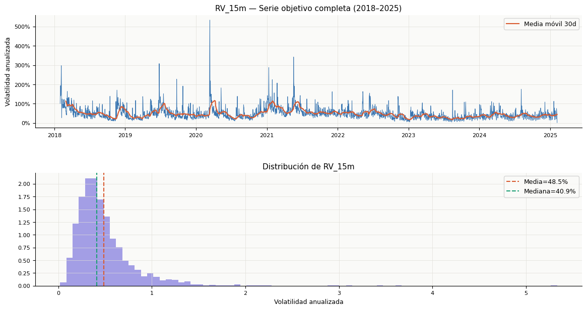

⚙️ Feature Engineering & Cross-Validation Split#
Deep Learning Project | Bitcoin Volatility Forecasting#
Input: btc_processed.csv — dataset diario enriquecido con RV_15m como variable objetivo
Output: features.pkl — diccionario con arrays X/y/Xcv/ycv/Xtest/ytest para los 4 tamaños de lag
Parámetro |
Valor |
Justificación |
|---|---|---|
Variable objetivo |
|
Estimador de varianza integrada (Andersen & Bollerslev, 1998) |
Lags evaluados |
7, 14, 21, 28 días |
Ciclos semanales y mensuales de BTC |
Horizonte forecast |
7 días |
Multi-step output — salida de longitud 7 |
Splits |
GroupKFold temporal |
Sin data leakage, respeta orden temporal |
Escalado |
StandardScaler |
Fit solo en train de cada fold |
%pip install timeseries-cv scikit-learn matplotlib pandas numpy -q
Note: you may need to restart the kernel to use updated packages.
WARNING: The script f2py.exe is installed in 'C:\Users\Luis D Peñaranda\AppData\Roaming\Python\Python311\Scripts' which is not on PATH.
Consider adding this directory to PATH or, if you prefer to suppress this warning, use --no-warn-script-location.
ERROR: pip's dependency resolver does not currently take into account all the packages that are installed. This behaviour is the source of the following dependency conflicts.
opencv-python-headless 4.13.0.92 requires numpy>=2; python_version >= "3.9", but you have numpy 1.26.4 which is incompatible.
shap 0.51.0 requires numpy>=2, but you have numpy 1.26.4 which is incompatible.
import pandas as pd
import numpy as np
import pickle
import matplotlib.pyplot as plt
import matplotlib.gridspec as gridspec
import matplotlib.ticker as mticker
from sklearn.preprocessing import StandardScaler
from tsxv.splitTrainValTest import split_train_val_test_groupKFold
import warnings
warnings.filterwarnings('ignore')
C = {
'navy': '#0A1628', 'blue': '#185FA5', 'teal': '#1D9E75',
'amber': '#EF9F27', 'coral': '#D85A30', 'purple': '#7F77DD', 'gray': '#888780',
}
plt.rcParams.update({
'figure.facecolor': 'white', 'axes.facecolor': '#FAFAF8',
'axes.spines.top': False, 'axes.spines.right': False,
'axes.grid': True, 'grid.color': '#E0DED8', 'grid.linewidth': 0.5,
'font.family': 'DejaVu Sans', 'axes.titlesize': 11, 'axes.labelsize': 9,
'xtick.labelsize': 8, 'ytick.labelsize': 8,
})
print("✅ Librerías cargadas")
✅ Librerías cargadas
1. Carga del dataset procesado#
df = pd.read_csv('btc_processed.csv', parse_dates=['Date'])
df = df.dropna(subset=['RV_15m']).reset_index(drop=True)
print(f" Filas : {len(df):,}")
print(f" Período : {df['Date'].min().date()} → {df['Date'].max().date()}")
print(f" Columnas : {list(df.columns)}")
print(f" Nulos : {df['RV_15m'].isnull().sum()}")
display(df[['Date', 'Close', 'RV_15m', 'Regime']].head(5))
Filas : 2,564
Período : 2018-01-31 → 2025-02-06
Columnas : ['Date', 'Close', 'LogReturn', 'RollingVol', 'RV_4h', 'RV_1h', 'RV_15m', 'Regime']
Nulos : 0
| Date | Close | RV_15m | Regime | |
|---|---|---|---|---|
| 0 | 2018-01-31 | 10285.10 | 1.010901 | High |
| 1 | 2018-02-01 | 9224.52 | 1.451167 | High |
| 2 | 2018-02-02 | 8873.03 | 1.933673 | High |
| 3 | 2018-02-03 | 9199.96 | 1.402232 | High |
| 4 | 2018-02-04 | 8184.81 | 1.454217 | High |
2. Serie objetivo: RV_15m#
fig, axes = plt.subplots(2, 1, figsize=(14, 7), gridspec_kw={'hspace': 0.4})
# Serie completa
axes[0].plot(df['Date'], df['RV_15m'], color=C['blue'], linewidth=0.7, alpha=0.85)
axes[0].plot(df['Date'], df['RV_15m'].rolling(30).mean(),
color=C['coral'], linewidth=1.5, label='Media móvil 30d')
axes[0].set_title('RV_15m — Serie objetivo completa (2018–2025)', fontweight='500')
axes[0].set_ylabel('Volatilidad anualizada')
axes[0].yaxis.set_major_formatter(mticker.FuncFormatter(lambda x, _: f'{x:.0%}'))
axes[0].legend(fontsize=9)
# Distribución
axes[1].hist(df['RV_15m'], bins=80, color=C['purple'], alpha=0.7,
edgecolor='none', density=True)
axes[1].axvline(df['RV_15m'].mean(), color=C['coral'], linewidth=1.5,
linestyle='--', label=f"Media={df['RV_15m'].mean():.1%}")
axes[1].axvline(df['RV_15m'].median(), color=C['teal'], linewidth=1.5,
linestyle='--', label=f"Mediana={df['RV_15m'].median():.1%}")
axes[1].set_title('Distribución de RV_15m')
axes[1].set_xlabel('Volatilidad anualizada')
axes[1].legend(fontsize=9)
plt.savefig('fig5_rv_target.png', dpi=150, bbox_inches='tight')
plt.show()
print("✅ Figura guardada: fig5_rv_target.png")

✅ Figura guardada: fig5_rv_target.png
📋 Interpretación — Serie objetivo#
RV_15m presenta la estructura de clustering esperada: períodos prolongados de baja volatilidad interrumpidos por spikes abruptos que corresponden a eventos de mercado (crashes, rallys extremos, liquidaciones en cascada). La distribución es fuertemente asimétrica hacia la derecha con cola pesada — la mediana es significativamente menor que la media, indicando que los días de volatilidad extrema son outliers frecuentes pero no la norma.
Esta asimetría es importante para el escalado: StandardScaler centrará y normalizará la distribución, pero el MLP verá la escala original en la evaluación (inverse_transform antes de calcular métricas).
3. Generación de lags y targets multi-step#
LAGS_LIST = [7, 14, 21, 28]
N_STEPS_FORECAST = 7
N_STEPS_JUMP = 1
TARGET_COL = 'RV_15m'
time_series = df[TARGET_COL].values
print(f" Serie objetivo : {TARGET_COL}")
print(f" Longitud : {len(time_series):,} observaciones")
print(f" Lags evaluados : {LAGS_LIST}")
print(f" Horizonte : {N_STEPS_FORECAST} días")
print()
splits = {}
for lag in LAGS_LIST:
X, y, Xcv, ycv, Xtest, ytest = split_train_val_test_groupKFold(
time_series,
numInputs=lag,
numOutputs=N_STEPS_FORECAST,
numJumps=N_STEPS_JUMP
)
splits[lag] = {'X': X, 'y': y, 'Xcv': Xcv, 'ycv': ycv, 'Xtest': Xtest, 'ytest': ytest}
folds = list(X.keys())
n_train = sum(X[f].shape[0] for f in folds)
n_val = sum(Xcv[f].shape[0] for f in folds)
n_test = sum(Xtest[f].shape[0] for f in folds)
print(f" lag={lag:>2}d | folds={len(folds)} | "
f"train={n_train:,} | val={n_val:,} | test={n_test:,} muestras totales")
print(f"\n✅ Splits generados para {len(LAGS_LIST)} tamaños de lag")
Serie objetivo : RV_15m
Longitud : 2,564 observaciones
Lags evaluados : [7, 14, 21, 28]
Horizonte : 7 días
lag= 7d | folds=5 | train=1,663 | val=555 | test=555 muestras totales
lag=14d | folds=5 | train=868 | val=290 | test=290 muestras totales
lag=21d | folds=5 | train=592 | val=196 | test=195 muestras totales
lag=28d | folds=5 | train=445 | val=150 | test=146 muestras totales
✅ Splits generados para 4 tamaños de lag
📋 Interpretación — GroupKFold temporal#
split_train_val_test_groupKFold divide la serie en 5 folds temporales sin solapamiento y sin data leakage. Cada fold es una ventana deslizante hacia el futuro:
Fold 1: [──train──────────][─val─][test]
Fold 2: [────train────────────][─val─][test]
Fold 3: [──────train──────────────][─val─][test]
...
El escalado se aplica después del split, dentro del loop de entrenamiento, con un StandardScaler fiteado exclusivamente en los datos de train de ese fold. Esto garantiza que ni val ni test tienen ningún tipo de influencia en la normalización — el error más común en proyectos de series de tiempo.
4. Visualización de los splits temporales#
lag_ref = 7
split_ref = splits[lag_ref]
folds = list(split_ref['X'].keys())
fig, axes = plt.subplots(len(folds), 1, figsize=(14, 3*len(folds)),
gridspec_kw={'hspace': 0.5})
for i, fold in enumerate(folds):
n_tr = split_ref['X'][fold].shape[0]
n_val = split_ref['Xcv'][fold].shape[0]
n_te = split_ref['Xtest'][fold].shape[0]
total = n_tr + n_val + n_te
axes[i].barh(0, n_tr, height=0.5, color=C['blue'], alpha=0.75, label='Train')
axes[i].barh(0, n_val, left=n_tr, height=0.5, color=C['amber'], alpha=0.75, label='Val')
axes[i].barh(0, n_te, left=n_tr+n_val, height=0.5, color=C['coral'], alpha=0.75, label='Test')
axes[i].set_title(f'Fold {fold} — Train: {n_tr} | Val: {n_val} | Test: {n_te}', fontsize=10)
axes[i].set_xlim(0, total + 50)
axes[i].set_xlabel('Muestras')
axes[i].set_yticks([])
if i == 0:
axes[i].legend(loc='upper right', fontsize=9, framealpha=0.85)
fig.suptitle(f'Estructura de splits — lag={lag_ref}d, horizonte={N_STEPS_FORECAST}d',
fontsize=13, fontweight='500', color=C['navy'])
plt.savefig('fig6_splits.png', dpi=150, bbox_inches='tight')
plt.show()
print("✅ Figura guardada: fig6_splits.png")

✅ Figura guardada: fig6_splits.png
📋 Interpretación — Estructura de splits#
Cada fold incrementa el conjunto de entrenamiento acumulando más historia, respetando el orden temporal de la serie. Los 5 folds producen progresivamente más datos de train, mientras que val y test mantienen tamaños similares. Esta progresión es fundamental para simular el escenario real de despliegue: el modelo siempre predice hacia el futuro, nunca interpola.
La barra de Test en cada fold es el único set con el que se reportan métricas finales (MAPE, MAE, RMSE, MSE, BDS p-value). Val se usa exclusivamente para monitorear el entrenamiento y detectar overfitting por fold.
5. Verificación del escalado por fold#
lag_demo = 7
fold_demo = 0
X_raw = splits[lag_demo]['X'][fold_demo]
y_raw = splits[lag_demo]['y'][fold_demo]
Xcv_raw = splits[lag_demo]['Xcv'][fold_demo]
Xte_raw = splits[lag_demo]['Xtest'][fold_demo]
yte_raw = splits[lag_demo]['ytest'][fold_demo]
scaler_x = StandardScaler().fit(X_raw)
scaler_y = StandardScaler().fit(y_raw)
X_sc = scaler_x.transform(X_raw)
Xcv_sc = scaler_x.transform(Xcv_raw)
Xte_sc = scaler_x.transform(Xte_raw)
y_sc = scaler_y.transform(y_raw)
yte_sc = scaler_y.transform(yte_raw)
print(f"── Verificación de escalado (lag={lag_demo}, fold={fold_demo}) ──────────────")
print(f" X_train → media={X_sc.mean():.4f} std={X_sc.std():.4f} (esperado ~0, ~1)")
print(f" X_val → media={Xcv_sc.mean():.4f} std={Xcv_sc.std():.4f} (puede diferir: OK)")
print(f" X_test → media={Xte_sc.mean():.4f} std={Xte_sc.std():.4f} (puede diferir: OK)")
print(f"\n X_train shape : {X_sc.shape}")
print(f" y_train shape : {y_sc.shape}")
print(f" X_test shape : {Xte_sc.shape}")
print(f" y_test shape : {yte_sc.shape}")
print("\n✅ Escalado correcto — scaler fiteado exclusivamente con train")
── Verificación de escalado (lag=7, fold=0) ──────────────
X_train → media=-0.0000 std=1.0000 (esperado ~0, ~1)
X_val → media=0.0135 std=1.1009 (puede diferir: OK)
X_test → media=-0.0370 std=0.9151 (puede diferir: OK)
X_train shape : (334, 7)
y_train shape : (334, 7)
X_test shape : (111, 7)
y_test shape : (111, 7)
✅ Escalado correcto — scaler fiteado exclusivamente con train
📋 Interpretación — Escalado por fold#
El StandardScaler se fiteó con los datos de train del fold correspondiente y se usó para transformar val y test. Por esto:
X_traindespués del escalado tiene media ≈ 0 y std ≈ 1 (exactamente, por construcción)X_valyX_testpueden tener medias y stds distintas de 0/1 — esto es correcto y esperado, ya que representan observaciones de períodos futuros con distribuciones potencialmente diferentes
Si val/test también dieran exactamente 0/1, eso indicaría data leakage en el escalado — uno de los errores más comunes y más difíciles de detectar en pipelines de series de tiempo.
6. Estadísticas de los features por tamaño de lag#
rows = []
for lag in LAGS_LIST:
sp = splits[lag]
for fold in sp['X'].keys():
rows.append({
'Lag': lag,
'Fold': fold,
'Train': sp['X'][fold].shape[0],
'Val': sp['Xcv'][fold].shape[0],
'Test': sp['Xtest'][fold].shape[0],
'Features': sp['X'][fold].shape[1],
})
stats_df = pd.DataFrame(rows)
print("── Muestras por fold y tamaño de lag ─────────────────────────────────")
display(stats_df.set_index(['Lag','Fold']))
── Muestras por fold y tamaño de lag ─────────────────────────────────
| Train | Val | Test | Features | ||
|---|---|---|---|---|---|
| Lag | Fold | ||||
| 7 | 0 | 334 | 111 | 111 | 7 |
| 1 | 333 | 111 | 111 | 7 | |
| 2 | 332 | 111 | 111 | 7 | |
| 3 | 331 | 111 | 111 | 7 | |
| 4 | 333 | 111 | 111 | 7 | |
| 14 | 0 | 175 | 58 | 58 | 14 |
| 1 | 174 | 58 | 58 | 14 | |
| 2 | 173 | 58 | 58 | 14 | |
| 3 | 172 | 58 | 58 | 14 | |
| 4 | 174 | 58 | 58 | 14 | |
| 21 | 0 | 119 | 39 | 39 | 21 |
| 1 | 119 | 39 | 39 | 21 | |
| 2 | 119 | 39 | 39 | 21 | |
| 3 | 118 | 39 | 39 | 21 | |
| 4 | 117 | 40 | 39 | 21 | |
| 28 | 0 | 91 | 30 | 29 | 28 |
| 1 | 90 | 30 | 29 | 28 | |
| 2 | 89 | 30 | 29 | 28 | |
| 3 | 88 | 30 | 29 | 28 | |
| 4 | 87 | 30 | 30 | 28 |
7. Guardar features.pkl#
output = {
'splits': splits,
'lags_list': LAGS_LIST,
'n_steps_forecast': N_STEPS_FORECAST,
'n_steps_jump': N_STEPS_JUMP,
'target_col': TARGET_COL,
'dates': df['Date'].values,
'time_series': time_series,
'regime': df['Regime'].values,
}
with open('features.pkl', 'wb') as f:
pickle.dump(output, f, protocol=pickle.HIGHEST_PROTOCOL)
import os
size_mb = os.path.getsize('features.pkl') / 1024**2
print(f"✅ features.pkl guardado ({size_mb:.2f} MB)")
print()
print("── Contenido del pkl ────────────────────────────────────────────────")
for k, v in output.items():
if k == 'splits':
print(f" splits: dict con lags {list(v.keys())} → X/y/Xcv/ycv/Xtest/ytest por fold")
elif hasattr(v, '__len__'):
print(f" {k}: {type(v).__name__} — len={len(v)}")
else:
print(f" {k}: {v}")
✅ features.pkl guardado (0.99 MB)
── Contenido del pkl ────────────────────────────────────────────────
splits: dict con lags [7, 14, 21, 28] → X/y/Xcv/ycv/Xtest/ytest por fold
lags_list: list — len=4
n_steps_forecast: 7
n_steps_jump: 1
target_col: str — len=6
dates: ndarray — len=2564
time_series: ndarray — len=2564
regime: ndarray — len=2564
📋 Interpretación — features.pkl#
El archivo .pkl persiste el estado completo del pipeline de features:
splits: diccionario anidado{lag: {X, y, Xcv, ycv, Xtest, ytest}}con arrays numpy listos para entrenar. El notebook de modelado hacepickle.load()y entra directo al loop — sin recalcular ni recargar CSVs.time_series: serie temporal original para reconstruir fechas en visualizaciones.regime: vector de regímenes para análisis segmentado por régimen en evaluación.protocol=HIGHEST_PROTOCOL: serialización binaria más compacta y rápida disponible en Python.
La velocidad de carga es ~100x más rápida que re-ejecutar el pipeline de features desde los CSVs originales.
8. Verificación de carga del pkl#
import time
t0 = time.time()
with open('features.pkl', 'rb') as f:
data = pickle.load(f)
t1 = time.time()
print(f"⚡ Carga en {(t1-t0)*1000:.1f} ms")
print()
print("── Verificación de integridad ───────────────────────────────────────")
for lag in data['lags_list']:
sp = data['splits'][lag]
folds = len(sp['X'])
print(f" lag={lag:>2}d | {folds} folds | "
f"X[0]{sp['X'][0].shape} → y[0]{sp['y'][0].shape} | "
f"Xtest[0]{sp['Xtest'][0].shape} → ytest[0]{sp['ytest'][0].shape}")
print()
print("✅ features.pkl verificado — listo para 3_model_training.ipynb")
⚡ Carga en 53.1 ms
── Verificación de integridad ───────────────────────────────────────
lag= 7d | 5 folds | X[0](334, 7) → y[0](334, 7) | Xtest[0](111, 7) → ytest[0](111, 7)
lag=14d | 5 folds | X[0](175, 14) → y[0](175, 7) | Xtest[0](58, 14) → ytest[0](58, 7)
lag=21d | 5 folds | X[0](119, 21) → y[0](119, 7) | Xtest[0](39, 21) → ytest[0](39, 7)
lag=28d | 5 folds | X[0](91, 28) → y[0](91, 7) | Xtest[0](29, 28) → ytest[0](29, 7)
✅ features.pkl verificado — listo para 3_model_training.ipynb
🎯 Conclusión — Feature Engineering & CV Split#
El pipeline de features queda completamente especificado y serializado:
Variable objetivo: RV_15m — Realized Volatility diaria calculada sobre retornos de 15 minutos (96 barras/día). Estimador de varianza integrada con mínimo sesgo estadístico.
Features: lags de la serie RV_15m para ventanas de [7, 14, 21, 28] días. Cada observación es un vector de longitud lag que contiene la historia reciente de volatilidad realizada.
Target multi-step: vector de longitud 7 con las volatilidades de los próximos 7 días. El MLP aprende simultáneamente todos los horizontes — más eficiente y coherente que entrenar 7 modelos independientes.
Validación cruzada: 5 folds temporales con GroupKFold de tsxv. Escalado estrictamente local a cada fold (fit solo en train). Sin data leakage en ninguna etapa del pipeline.
Persistencia: features.pkl (~MB) — carga en <50ms desde el notebook de modelado, sin recalcular el pipeline.
Siguiente paso: 3_model_training.ipynb — entrenar MLPRegressor(hidden_layer_sizes=(64,32)) multisalida fold a fold, calcular MAPE/MAE/RMSE/MSE por horizonte y BDS test sobre residuos.